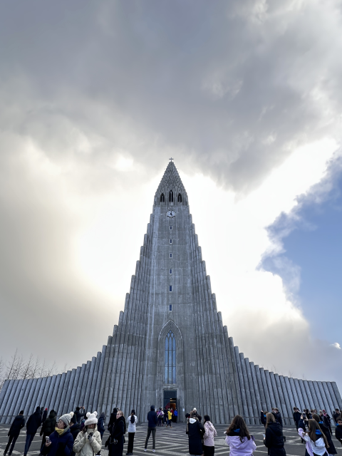
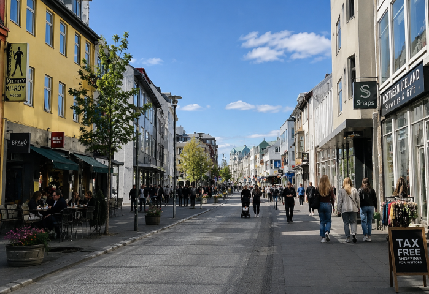
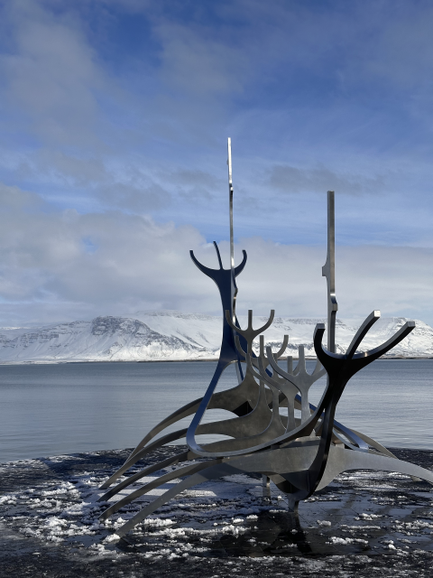
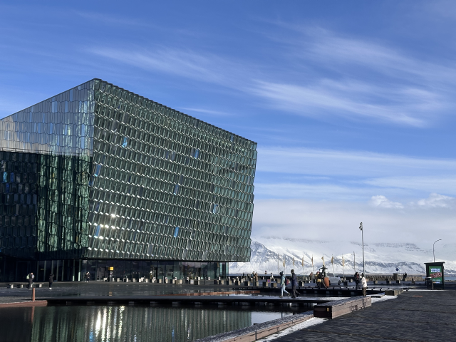
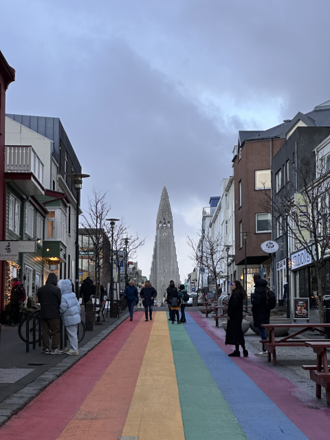
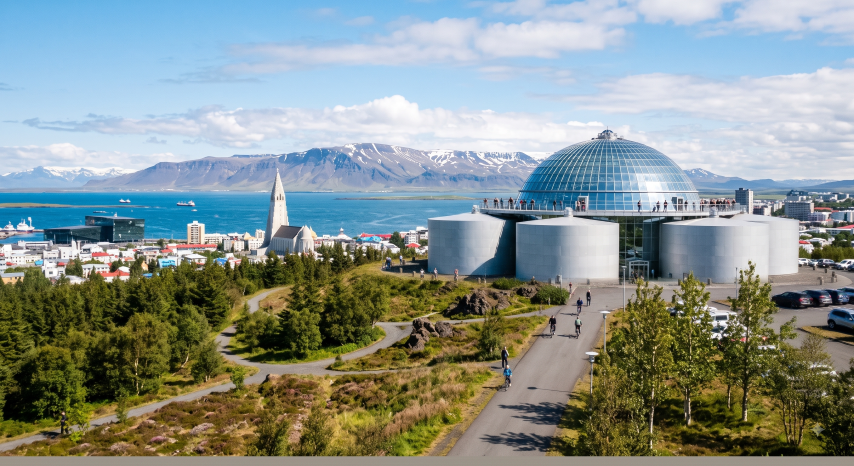
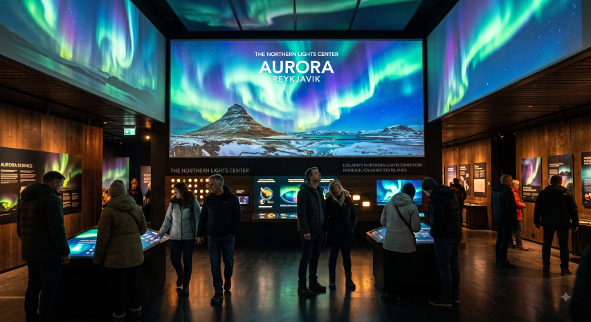

💡 行前懶人包
- 極致天氣變幻：冰島氣候多變，有「一日歷經四季」之稱。即便夏日也隨時可能遇上狂風暴雨，禦寒與三層穿搭（防水外殼+保暖中間層+排汗內層）不可或缺。
- 長途一日遊務必跟團：冰島幅員遼闊且天氣惡劣，獨旅者若不自駕，極難單靠大眾運輸當天往返主要自然景點，強烈建議提早報名當地一日團。
- 外食費用高昂：餐廳外食價格昂貴（一餐動輒 30-50 歐元以上），小資獨旅建議至 Bonus（小黃豬超市）採買食材在青旅下廚。
🛑 獨旅防雷與隱藏密技
💳完全無現金神國度
冰島是全世界電子支付普及率最高的國家之一！從公車、攤販到公共廁所，100% 都可以直接感應信用卡或 Apple Pay，全程完全不需要兌換任何冰島克朗（ISK）現鈔。
🛒小豬超市省錢大法
想降低昂貴的旅費，認明標誌是一隻粉紅小豬的Bónus 超市就對了！價格遠比 Kronan 或 10-11 便宜許多，是購買零食、Skyr 優格與晚餐食材的獨旅補給站。
🗺️ 必做體驗：雷克雅維克 8 大絕美景點
雷克雅維克雖然規模不大，但充滿極簡的北歐美學與濃厚的人文歷史。以下為你盤點市區最經典的地標：

1. 哈爾格林姆教堂 (Hallgrimskirkja)
雷克雅維克最重要的地標，靈感源自冰島獨特的柱狀玄武岩岩石結構。教堂高聳入雲，內部有巨大管風琴，頂樓觀景台可將彩色小屋街道盡收眼底。
💭 Bryan 親測：從正面望去視覺極為震撼！四季白天晚上都有不同的個性，都非常適合拍照。而且參觀主堂免費～

2. 勞加維古爾街 (Laugavegur)
雷克雅維克最熱鬧的主要商業購物街，沿途充滿精緻的北歐設計店、戶外服飾品牌、咖啡館與塗鴉藝術。
💭 Bryan 親測：是雷克雅維克的主要購物街，各式各樣的商店餐廳，也有很多紀念品店，非常適合來買伴手禮唷！

3. 太陽行者號 (Sun Voyager)
佇立於濱海步道旁的不鏽鋼雕塑，象徵著維京人對未知的探索與未來的憧憬，造型如同一艘充滿未來感的維京船骨架。
💭 Bryan 親測：很特別的大型裝置藝術。天氣晴朗時能跟背景起伏的山丘與波光粼粼的海面一起拍進去～

4. 哈爾帕音樂廳 (Harpa)
位於港口旁的現代建築傑作，外牆由數千塊幾何玻璃幾何體組成，會隨著陽光與天色變化折射出宛如北極光般的夢幻光影。
💭 Bryan 親測：這裡似乎不僅只是音樂會的舉辦地，活動、展會也會在不同地方舉辦。平時也有付費導覽。裡頭也有文創商店可以逛逛，或者單純拍拍美照也很棒。不過這裡的廁所怎麼也要收錢…

5. 彩虹街 (Regnbogagatan)
塗滿七彩彩虹顏色的石板街道，展現了冰島對多元性別與人權的包容。街道盡頭直接對準哈爾格林姆教堂，景深極佳。
💭 Bryan 親測：很適合拍美照。且因為直接通往哈爾格林姆教堂，很適合一起把兩個冰島最有名的景點拍起來！

6. 珍珠樓 (Perlan)
佇立於山丘上的半球形玻璃穹頂建築，內部設有互動式冰島自然博物館、真實的冰洞體驗、天文館以及 360 度全景觀景台。
7. 冰島定居展 (Landnámssýningin)
建立於西元 10 世紀維京人長屋遺址之上的考古博物館。透過高科技多媒體互動展示，重現早期維京先民登陸冰島開荒的生活景象。

8. 北極光中心 (The Northern Lights Center)
專為極光打造的展覽館！結合科學原理、各國極光神話故事，並設有 VR 虛擬實境與相機設定教學區，就算白天或夏天也能感受極光震撼。
🏔️ 雷克雅維克近郊一日遊：熱門跟團玩法
在冰島，長途巴士幾乎不可能實現一日往返各區自然奇觀。最省心高效且安全的獨旅方式，就是直接報名雷克雅維克市區接送的一日團：
🚐 嚴選高評價雷克雅維克出發一日團
黃金圈經典一日遊
打卡辛格維利爾國家公園、間歇泉與黃金瀑布三大冰島名勝。
南岸鑽石海岸與傑古沙龍冰河湖一日遊
親眼目睹漂浮在黑沙灘上的晶瑩冰塊與壯麗冰川。
南岸黑沙灘與雙瀑布一日遊
朝聖玄武岩黑沙灘與塞里雅蘭瀑布、斯科加瀑布。
斯奈山半島教堂山一日遊
探索被譽為「冰島縮影」的斯奈山半島與經典教堂山。
雷克雅維克夜間極光巴士追光團
專業極光獵人帶領，未看到極光可免費再次參加！
火山熔岩洞穴深層探險之旅
戴上頭燈深入千年地底火山熔岩管道，感受震撼奇觀。
🎉 年度慶典：三大必訪狂歡時刻
感受冰火之國獨特的藝術與文化熱情
雷克雅維克的節慶展現了極致的北歐創意。無論是寒冬中的璀璨光影，或是秋季席捲全城的獨立音樂節，都能讓你深深著迷。
冰島最國際化、規模最大的另類獨立音樂盛會。整座雷克雅維克市區（從知名音樂廳到街角唱片行、神秘小教堂）會串聯成無數個表演舞台，是全球獨立音樂迷朝聖的殿堂。
雷克雅維克一年之中人氣最高、最具規模的城市嘉年華。街頭巷尾擠滿各種免費的藝術展演、快閃音樂會與創意市集，整座城市充滿歡樂的派對氣氛，並以深夜的壯麗煙火秀達到最高潮。
為了點亮冰島漫長且黑暗的冬夜而舉辦的藝術盛會。市區各大重要建築與地標會點綴上絢麗奪目的燈光藝術與光雕秀，同時結合了著名的「博物館之夜」，讓遊客免費參觀各大場館並參與戶外活動。
🚆 交通全攻略：機場聯外與市區移動建議
📍 從凱夫拉維克國際機場 (KEF) 出發
機場快線巴士 (Flybus)
最推薦/班次密冰島公車 55 號 (Strætó)
省錢公車📍 市內交通與滑板車玩法
Strætó 市區公車
雷克雅維克市區黃色公車。直接上車刷信用卡或使用官方 App 購票即可，完全不需要現金。
- 單程票：690 ISK
Hopp 共享電動滑板車
最推薦的市區移動方式！雷克雅維克市區平坦且滑板車極為普及，下載 Hopp App 綁定信用卡，掃碼即可輕鬆穿梭於海邊與彩色小屋巷弄間。
🎫 雷克雅維克城市卡 (Reykjavík City Card)
包辦市區各大博物館門票、溫泉游泳池進場，以及免費無限次搭乘 Strætó 市區公車！適合熱愛文化展覽與博物館的獨旅者。
🛏️ 住宿建議：精選安全且高性價比的獨旅避風港
| 🛏️ 住宿飯店 / 青旅 | 🔗 預訂連結 | 💰 平均房價參考 | ⭐ 旅客評分 | 💡 站長為何推薦 |
|---|---|---|---|---|
| Bus Hostel Reykjavik 📍 Google Maps | EUR 40 - 70 / 晚 | 約 8.4 / 10 鄰近 BSÍ 總站 |
鄰近 BSÍ 巴士總站，對於要搭早班機場巴士或一日遊接送非常方便。附設熱鬧酒吧，CP 值極高。 | |
| Kex Hostel 📍 Google Maps | EUR 50 - 85 / 晚 | 約 8.7 / 10 工業復古風，海景酒吧 |
由舊餅乾工廠改造的潮流青旅！面對無敵海景，內部酒吧氣氛絕佳，常有現場音樂表演，社交體驗一流。 | |
| Nordic Hostel 📍 Google Maps | EUR 45 - 75 / 晚 | 約 8.5 / 10 市中心，乾淨簡約 |
位於市中心購物街旁，簡約極致的北歐風格。廚房設備齊全，環境安靜舒適，非常適合喜歡安靜的獨旅者。 | |
| Loft - HI Eco Hostel 📍 Google Maps | EUR 55 - 90 / 晚 | 約 8.9 / 10 頂樓露台，永續環保 |
主打永續環保理念，榮獲多項最佳青旅大獎。頂樓露台俯瞰購物街，晚上經常舉辦幸運酒吧夜與音樂會。 | |
| Hostel B47 📍 Google Maps | EUR 40 - 65 / 晚 | 約 8.3 / 10 近教堂，自動入住 |
離哈爾格林姆教堂極近，採用無接觸自動 Check-in 系統。空間寬敞且價位相對平實，小資極力推薦。 |
🍝 在地美食指南：冰島獨特的舌尖冒險
🍽️ 必吃美食
極端環境造就了冰島獨樹一格的食材保存與烹調文化，以下是來到雷克雅維克必嚐的傳統風味：
將格陵蘭鯊魚肉埋在地地下發酵數月並風乾而成的「暗黑料理」，帶有強烈阿摩尼亞氣味，通常會搭配冰島黑死酒（Brennevín）一口飲下。
深色甜黑麥麵包，傳統做法是將麵糊放入金屬桶，埋入地熱溫泉區的土裡慢火蒸烤長達 24 小時，質地濕潤綿密。
雖然常被當作優格，但嚴格來說它是濃縮起司。質地比希臘優格更加濃厚滑順，高蛋白且低脂肪，超市必買！
主要產自冰島東南部，肉質極為緊實鮮甜。雷克雅維克各大餐廳廣泛供應，常做成香濃小龍蝦湯或奶油香煎。
將新鮮鱈魚或黑線鱈與馬鈴薯、洋蔥、奶油白醬一同搗碎燉煮，口感溫潤糊稠，是經典的冰島家常 Comfort food。
以帶骨羊肉塊慢熬，加入馬鈴薯、紅蘿蔔與根莖蔬菜，香氣濃郁無騷味，是寒風中極具代表性的暖心湯品。
🎒 獨旅實戰：友好餐廳與平價清單
冰島外食雖然昂貴，但也有許多高 CP 值、對單人用餐極度友善的平價美店：
| 🍴 餐廳名稱 | 💰 價格水平 | 📍 交通位置 | 💡 站長推薦理由 |
|---|---|---|---|
| Bæjarins Beztu Pylsur 連鎖店 📍 在地圖開啟 | 極低價位 平價熱狗堡 |
港口邊總店及市區分店 |
連柯林頓都加持過的「全歐洲最好吃熱狗」！羊肉混豬牛肉腸極其多汁，搭配特製炸洋蔥與美乃滋黃芥末，便宜又充飢。 |
| Svarta Kaffið 📍 在地圖開啟 | 中低價位 麵包湯名店 |
Laugavegur 購物街上 |
只賣兩種湯（牛肉或蔬菜湯）的巨型麵包碗湯名店！外皮酥脆的麵包挖空裝滿熱氣騰騰的濃湯，冷天吃上一碗極度療癒，單人友善。 |
| Mandi Reykjavík 📍 在地圖開啟 | 低價位 中東沙威瑪 |
市區舊港口周邊 |
冰島最受歡迎的中東美食！烤肉捲餅（Shawarma）與法拉費（Falafel）份量充足且價格實惠，是深夜想吃熱食的平價補給站。 |
| Icelandic Street Food 📍 在地圖開啟 | 中低價位 無限免費續湯 |
市區中心街道 |
全冰島最熱情的餐廳！主打傳統羊肉湯與奶油燉魚麵包湯，最狂的是「可以免費無限續湯與甜點」！老闆服務親切，獨旅者絕對能吃飽喝足。 |
🇮🇸 冰島獨旅生存避雷箱
交通：一日團是獨旅首選
冰島的大眾運輸不發達，跨城巴士班次少且車資高昂。不自駕的獨旅者強烈建議直接報名當地出發的一日團，有專車接送與導覽，省心且安全。
接送地點通常為市區指定的「Bus Stop」，預訂一日團後務必確認距離青旅最近的搭車站點號碼。
裝備：穿著機能防風防水衣物
冰島的天氣變化劇烈，大風暴雨是常態。普通的棉質外套或雨傘在冰島狂風下完全無用，防水透氣的 Gore-Tex 外套與登山鞋是基本裝備。
採「洋蔥式穿搭」，裡面穿保暖刷毛或發熱衣，最外層一定要是防風防水外殼。
餐飲：外食昂貴，自煮省大錢
冰島物價高居歐洲前列，在餐廳吃一餐通常需要 30-50 歐元以上。獨旅想控管預算，去 Bónus 小黃豬超市買食材回青旅下廚是最聰明的做法。
超市的義大利麵、微波食品、Skyr 優格與熱狗都非常便宜，自己煮能幫你省下數千台幣的旅費！

Bryan | Europe Solo Guide
「獨旅不是孤單，而是給自己一場完整的自由。」
熱愛穿梭在歐洲老城區的石板路上與壯麗群山間。目前已獨自走訪 41 個歐洲國家，致力於將複雜的交通、住宿與隱藏景點，轉化為有溫度的獨旅攻略。希望這篇文章能幫你省下找資料的時間，把精力留給旅途中的美好。
✉️ 聯繫我 / 合作邀約